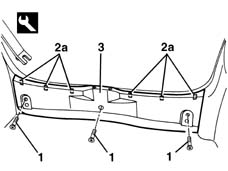

7040B22 luggage compartment/load platform moulding - r+r
- Path
- Procedures > 70 FITTINGS > 7040 BODYSHELL INTERIOR TRIMS AND FITTINGS > 7040B luggage compartment and load platform trims > 7040B22 luggage compartment/load platform moulding - r+r
- Kind
- repair procedure (removal / refitting; the operation number is the code)
- Applies to
- all engines; all production periods
- Interactive page
- https://sloeber94.github.io/elrnDB-lYpsln/en/#/2429585
Applies to: all engines; all production periods
 Removing
Removing
 Refitting
RefittingOpen the tailgate.
1. Undo the bolts.
2. Release the inner retainers (2a) using the special tool.
 | Name | Country |
|---|---|---|
1 | Scraper blade | 1.878.077.000 |
3. Remove the moulding.

Applies to: all engines; all production periods
Refitting
RemovingCheck that the moulding is not damaged and that the inner retainers are intact and correctly positioned.
Position the moulding attaching the inner retainers.
Tighten the bolts.